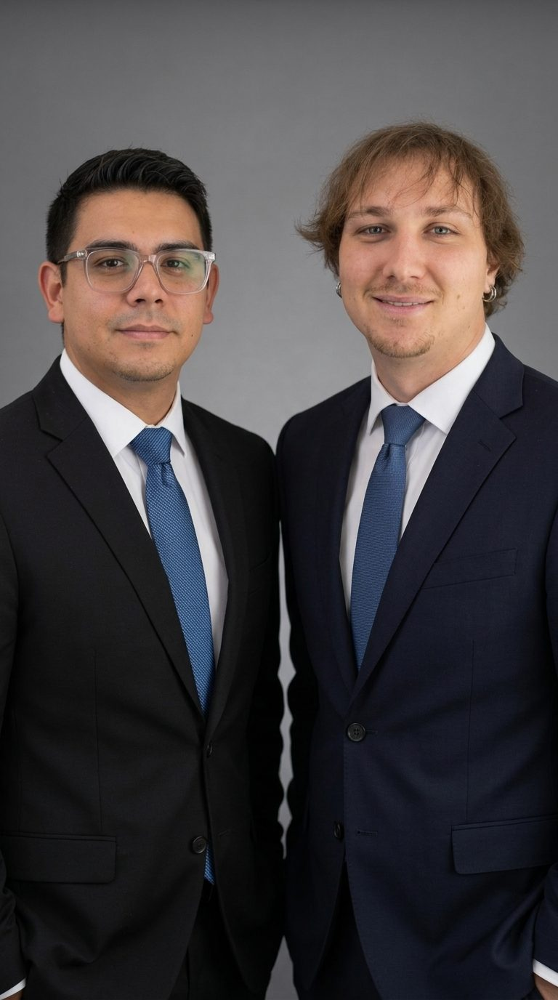

About
Cognexa: an AI automation agency in Centurion, Gauteng
What does Cognexa actually do?
We take the repetitive parts of running a business and hand them to software. That usually starts with the phone or the WhatsApp line, because those are where missed messages turn directly into lost work — and then extends backwards into the admin those conversations create: the quote, the booking, the invoice, the follow-up, the CRM record nobody updated.
Four things make up most of what we build:
- AI receptionists and voice agents that answer every inbound call, qualify the caller, book into your calendar and hand over to a person when a call needs judgement.
- WhatsApp and website chatbots that reply in seconds, at any hour, and route the enquiry to the right place with its full context attached.
- Workflow automation for quoting, invoicing, appointment booking and reminders, inbox triage and CRM hygiene.
- Custom CRM development for businesses whose sales process does not fit the shape of an off-the-shelf product.
We also design immersive 3D websites — the one you are reading is one of them — but that is the smallest part of what we do, and it exists because a business that has automated its operations usually wants a front door that matches.
Who is behind Cognexa?
Cognexa is run by two co-founders, Ronnie James Botes and Keegan Shane Haumann, from Centurion in Gauteng. There is no account manager layer and no offshore build team — the two people who scope your project are the two people who build it, and you deal with them directly from the first call to the day it goes live.

Ronnie James Botes — Co-founder
Ronnie has worked in SEO and web development since 2019. Most of that was spent at a company he is under NDA about, so the client names stay unsaid — but the work was the unglamorous half of the web: making sites load, making them findable, and making the two things stop fighting each other. At Cognexa he handles search visibility, site architecture and the front end of what you see.
Keegan Shane Haumann — Co-founder
Keegan is a full-stack developer with five years behind him, at the same company and under the same NDA. He works across the whole stack, which is what an automation build actually demands — a voice agent that books an appointment is only as good as the integration writing into the calendar behind it. At Cognexa he owns the systems side: integrations, data, and the parts nobody sees.
Why automation, and not something else
We have been using AI in our own work since it became usable, long before it was a service we sold. Not as a novelty — as a way to get the repetitive parts of the job off our desks so the hours went to work that actually needed a person. Doing that for ourselves for years is what turned into Cognexa: we already knew which tasks a machine handles well, which ones it quietly gets wrong, and where handing something over costs more than it saves. That is the same judgement we bring to scoping your build, and it is why we will tell you when automating something is not worth it.
You can reach either of us on 066 241 2155, on WhatsApp, or at hello@cognexa.co.za.
How does Cognexa work with clients?
Every project starts with a free scoping conversation and ends with one fixed monthly figure in Rand, agreed before any work begins. There is no minimum contract and no lock-in period, which means the automation has to keep earning its place every month rather than coasting on a twelve-month term.
In practice that looks like five stages: we work out what is actually eating your team’s hours, design the automation around your existing process rather than asking you to change it, build and test it against real cases before it touches a customer, deploy it, and then keep tuning it as we see how people actually use it. You can see that sequence laid out on the process section of our homepage.
Two commitments sit behind that. The first is that we quote in Rand — several of the platforms these builds run on bill in US dollars, and we make that distinction explicit in the quote rather than folding it into one number that quietly drifts. The second is that we reply to every enquiry within one business day. Details of how we price are on our pricing page.
Why does being South African matter for this work?
Because the defaults that international automation vendors ship do not match how South African businesses actually operate. A US-built chatbot assumes email and a website widget are the primary channels. In this market, a great deal of business gets done on WhatsApp — so an automation that ignores it is automating the wrong channel.
The same applies to compliance and to language. POPIA sets rules on consent, data minimality and automated decision-making that international compliance pages generally do not mention at all — we write about what that means in practice in our guide to POPIA compliance for WhatsApp AI chatbots. And speech recognition trained mostly on American English handles South African accents and Afrikaans unevenly, which is something worth testing before you commit rather than discovering afterwards; we cover how to test it in can an AI chatbot speak Afrikaans and isiZulu.
Where is Cognexa based, and who do you work with?
Cognexa operates from Centurion in Gauteng and works with businesses across South Africa, as well as clients internationally. Because the work is remote by nature — the systems being automated are cloud systems — there is no practical difference between building for a business in Pretoria and one in Cape Town.
The businesses this suits best are ones where a person is spending real hours on work a machine could do: practices and clinics with a booking diary, trades and service businesses sending quotes, agencies and professional firms drowning in inbox admin, and anyone missing calls after hours. If your volume is low and every enquiry genuinely needs judgement, automation is probably not your best investment, and we will say so on the scoping call.
What do you write about?
We publish plain-English guides on what these systems actually cost, what they can and cannot do, and where South African rules and habits change the answer. No vendor spin and no jargon. The most-read ones cover what an AI receptionist costs in South Africa, how an AI receptionist compares to a human receptionist and an answering service, and the twelve workflows worth automating first. The full set lives in Insights.